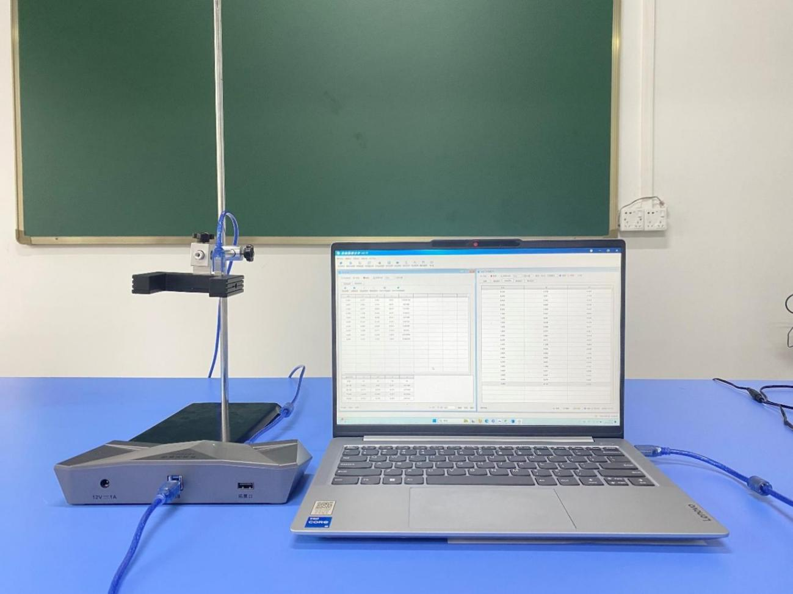
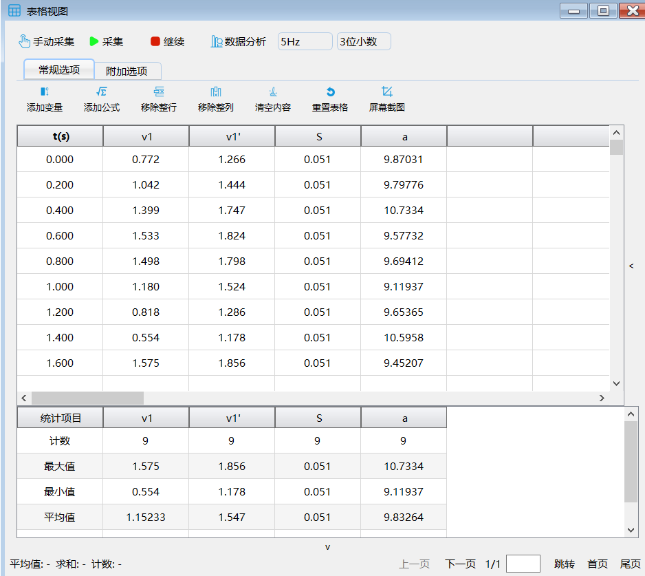

实验十三 测量自由落体加速度
【实验目的】
掌握用自由落体运动规律测量重力加速度的方法，加深对自由落体运动规律的理解。
【实验原理】
由匀变速直线运动规律Vt2-V02=2aS，可得a= (Vt2-V02)/2S，本实验采用光电门传感器来测量重力加速度，当U形挡光片前端挡光时，传感器记录下挡光时间t1，挡光片后端挡光时，传感器记录下挡光时间t2。由于t1 和t2很小，因此用挡光片宽度d分别除以两次挡光时间所得值可认为是挡光片前后端经过光电门时的瞬时速度，即可根据光电门读数求出U形挡光片经过光电门时的初速度V0和末速度Vt ，这样，只要测量出U形挡光片两前沿距离S和挡光片宽度d，就可以代入公式求出重力加速度g。
【实验器材】
数据采集器、光电门传感器、计算机、连接套件、铁架台及实验附件、U形挡光片。
【实验装置】

【实验操作步骤】
1.搭建好实验环境，利用连接套件将光电门传感器固定铁架台上；
2.打开实验数据分析软件，连接好数据采集器和光电门传感器，在光电门传感器窗口选择挡光片类型为“U型”；
3.打开“表格视图”，点击“添加变量”，以“常量方式”添加代表距离的数据列“S”，起始值设为“0.51”，点击“添加公式”，添加代表加速度的数据列“a=(Vt2-V02)/2S”；
4.设置完成后，将U形挡光片从光电门上方自由释放，注意使挡光片竖直下落并能顺利挡光。光电门传感器测量出挡光片经过光电门时的初速度和末速度，软件自动根据公式计算出挡光片下落的加速度；
5.重复多次实验，得到多个“a”值，查看多次实验所得“a”值的平均值，与当地实际重力加速度值进行比较。

【思考与讨论】
实验所测得的重力加速度值与当地的重力加速度值一致吗？试分析实验中误差的主要来源。
【自由探究】
设计其他实验，用光电门测量当地的重力加速度。